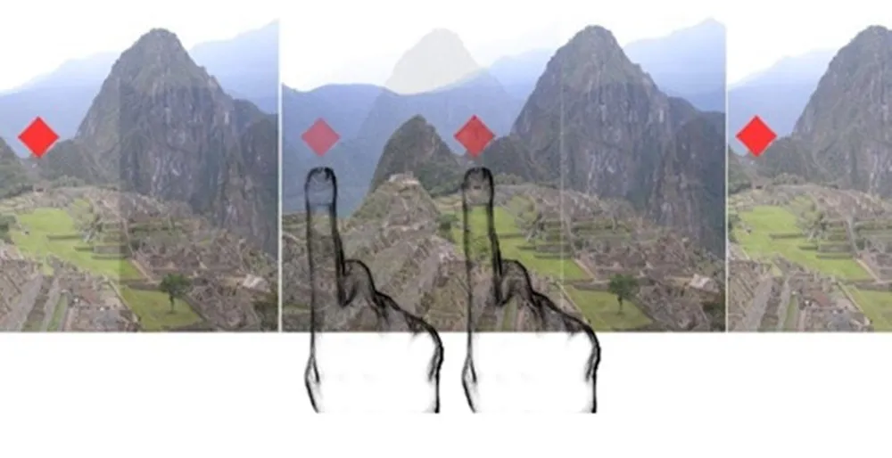

Realidade Virtual
Realidade virtual é uma tecnologia de interface capaz de enganar os sentidos de um usuário por meio de um ambiente virtual criado a partir de um sistema computacional. Ao induzir efeitos visuais, sonoros e até táteis, a realidade virtual permite a imersão completa em um ambiente simulado, com ou sem interação do usuário. Atualmente, a realidade virtual tem como base displays estereoscópicos, como óculos e headsets.

Como óculos de realidade virtual funcionam?
Uma das bases da ilusão visual de uma nova realidade é forjar a atual. Para isso, uma simples imagem plana passada diante de nossos olhos não basta. A mesma poderia simplesmente ser encarada como algo falso. É aí que entra um dos trunfos da realidade virtual.
Com o uso da estereoscopia, a ilusão de profundidade é criada, apresentando mais um elemento de
imersão para a realidade virtual. Para que isso acontece, duas imagens diferentes são geradas, uma para cada olho.
O efeito consiste na interpretação do cérebro de que as duas imagens na realidade são uma só.
A tecnologia que primeiro começou com fotos, hoje é utilizada em filmes e ambientes tridimensionais gerados por
computador. Tecnologias atuais como o Oculus Rift, permitem uma interpolação tão rápida entre as imagens, que o
efeito 3D é impressionante.
O grande destaque desses óculos modernos é a capacidade de interagir em sincronia com o movimento da cabeça do
usuário. Diferente dos óculos de cinema e brinquedos como o “View-Master”. Ao utilizar o Oculus Rift, por exemplo,
a visão é completamente sobreposta por um visor 3D. A imagem gerada não permanece estática em um único ponto, ela
acompanha a movimentação do usuário.